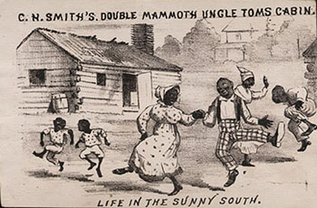

LIFE IN THE SUNNY SOUTH
Advertising card for C. H. Smith's Double
Mammouth Uncle Tom's Cabin. On the back of this
advertising card are the details of the company's
production in Providence, Rhode Island, in the mid-1880s.
It featured "a genuine cotton plantation."
Courtesy the Robert & Virginia Tunstall
Trust
University of Virginia Library
|